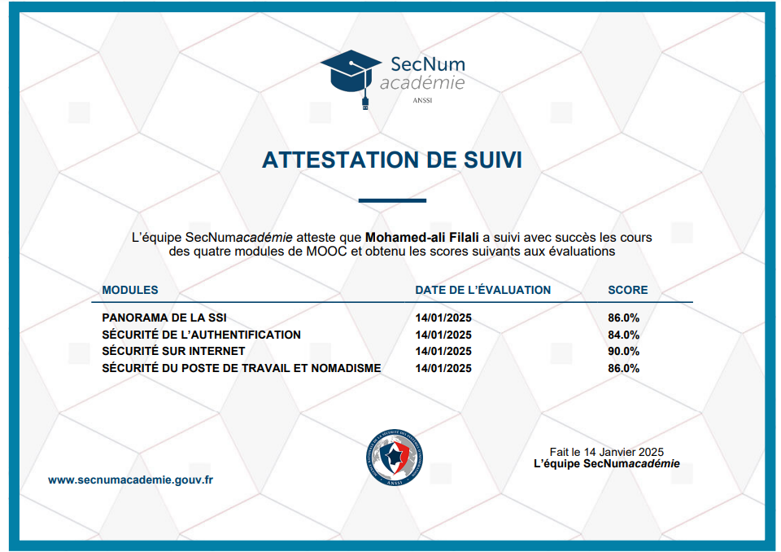
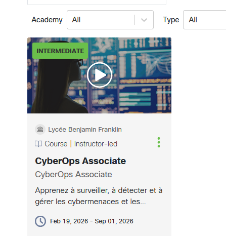
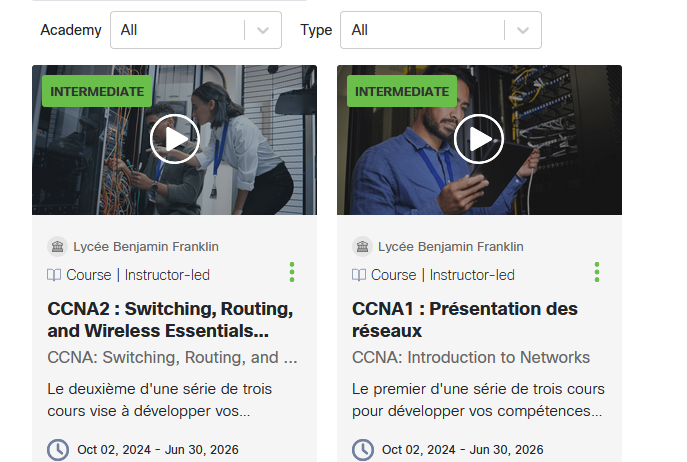

Mes Certifications
Retrouvez ici les différentes certifications et attestations que j'ai obtenues.
🎓 Compétence associée :
L'acquisition de ces certifications et attestations contribue au développement des compétences du projet professionnel individuel et à la structuration d'un environnement d'apprentissage continu.
SecNumacadémie (ANSSI) - Attestation de suivi
J'ai suivi avec succès les quatre modules du MOOC de l'ANSSI : Panorama de la SSI, Sécurité de l'authentification, Sécurité sur Internet, et Sécurité du poste de travail et nomadisme. Cette formation m'a permis de consolider mes connaissances sur les enjeux de la cybersécurité et les bonnes pratiques associées.

Cisco Networking Academy - CyberOps Associate
Formation qualifiante suivie via le Lycée Benjamin Franklin, centrée sur la surveillance, la détection et la réponse aux cybermenaces (opérations de type SOC). Elle démontre mes capacités à sécuriser et surveiller une infrastructure système et réseau moderne.

Cisco Networking Academy - CCNA 1 & 2
Validation des modules CCNA 1 (Présentation des réseaux) et CCNA 2 (Switching, Routing, and Wireless Essentials). Ces cours très approfondis attestent de mes compétences en configuration de routeurs et commutateurs, conception de VLANs, et compréhension des protocoles.

OpenClassrooms - TCP/IP
Cours complété sur la conception et la gestion des réseaux TCP/IP. Les notions abordées incluent l'adressage IP, le découpage en sous-réseaux, le routage, et les fondamentaux du modèle OSI et TCP/IP, compétences clés pour l'administration d'infrastructures.
OpenClassrooms - Initiez-vous à Linux
Formation complétée dans la catégorie Systèmes & Réseaux, couvrant les fondamentaux de l'environnement Linux : navigation en ligne de commande, gestion des fichiers et permissions, utilisation du terminal, et compréhension de l'architecture du système. Ces compétences sont essentielles pour l'administration d'infrastructures serveur en environnement SISR.

OpenClassrooms - Administrez un système Linux
Formation avancée dans la catégorie Systèmes & Réseaux, portant sur l'administration système Linux : gestion des utilisateurs et des groupes, configuration des services réseau, automatisation avec les scripts Bash, gestion des paquets, et supervision du système. Cette certification renforce directement mes compétences pour le déploiement et la maintenance de serveurs en production.